HyperShelf DemandSense v2 is a full-stack retail intelligence pipeline — LightGBM probabilistic demand forecasting, Random Forest phantom inventory detection, and a locally-served LLM that explains real supply chain decisions without hallucinating a single number. Engineered by an AI & Machine Learning Engineer and MS student at the University at Buffalo.
It’s a Friday evening. A family walks into a store to buy their favorite brand of premium juice for the weekend. The shelf is completely empty. They leave and buy it at a competitor's store.
The store manager investigates and finds the system says 0 stock. They place an emergency order immediately, but the upstream supplier has an 11-day lead time. The next weekend arrives—foot traffic is up 40% for Saturday shopping, but the product still hasn't arrived. The shelves remain empty. The cycle repeats.
Meanwhile, across 478 stores, $47.4M in revenue is silently disappearing. Not from theft. Not from damage. From a forecasting model that treats every day the same — a 30-day moving average that has no concept of weekends, promotions, lead time variability, or demand uncertainty. When Black Friday hits and stores clear shelves in 4 hours, the model keeps predicting the same volumes it saw last month. For every 10 units sold, it predicted 17. Bias: -1.72.
The safety stock policy was Target = μ. Average demand, nothing more. No buffer for uncertainty. No tier-based service level. No model for what happens when a supplier delivers 3 days late into a peak week. The result: stockouts that were entirely predictable if you had the right model.
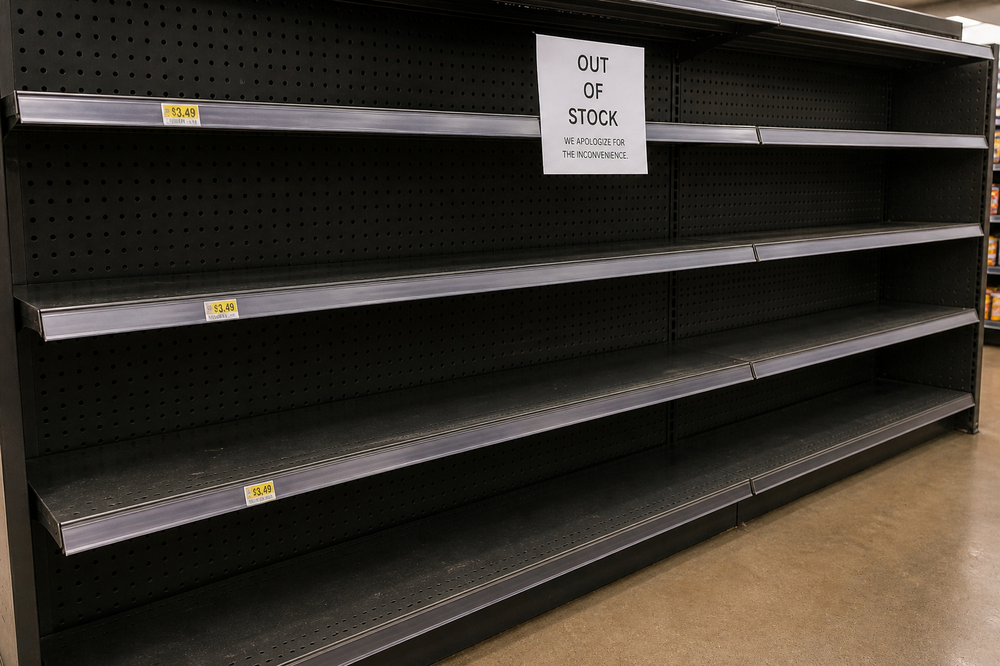
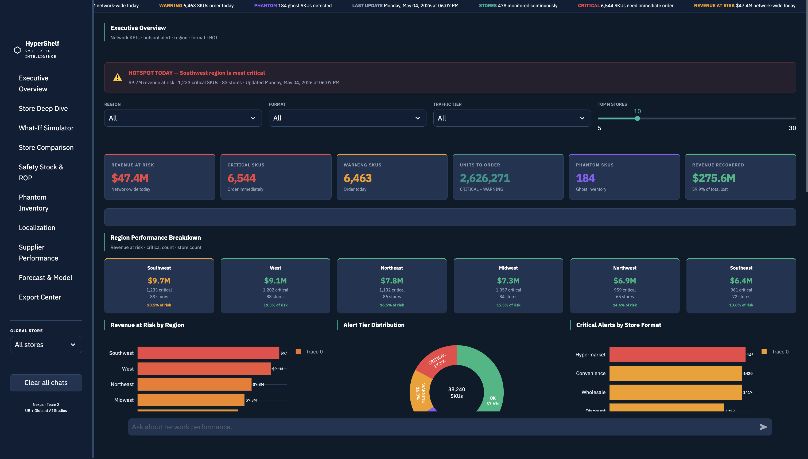
Retail demand is non-linear, non-stationary, and event-driven. A 30-day moving average assumes yesterday predicts tomorrow. LightGBM assumes nothing — it learns from the interaction between day-of-week, promotional depth, lag velocity, and store format simultaneously, capturing patterns that no linear model can represent.
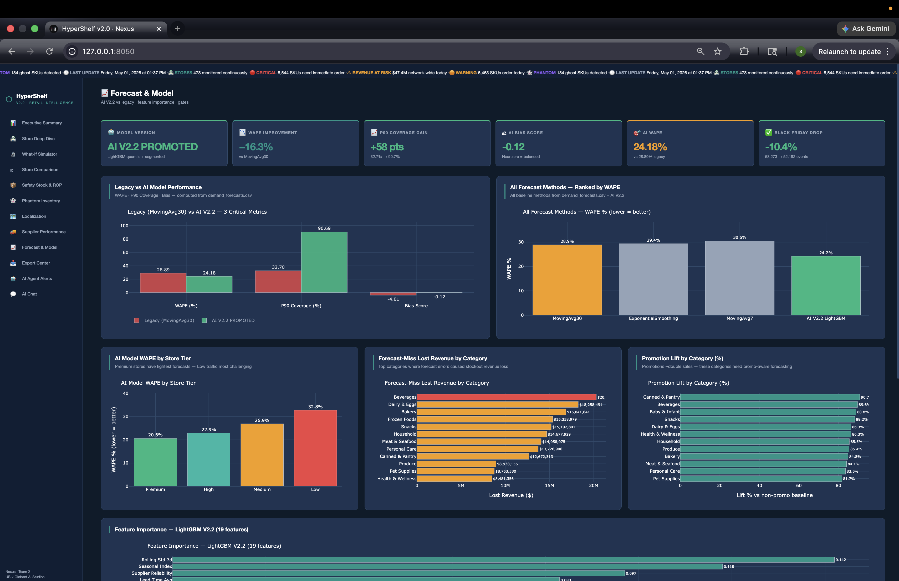
Gradient boosting builds an ensemble of trees sequentially — each tree corrects the residual errors of the previous one. For retail, this matters because demand drivers interact in complex, non-additive ways: a Saturday promotion in a Premium store during summer hits differently than the same promotion on a Tuesday in a Medium store in winter. Decision trees capture those interactions natively through splits. Linear models require you to specify them manually, and you'll miss most of them.
LightGBM specifically — rather than XGBoost — was chosen for its leaf-wise tree growth on 4.58 GB of training data. Leaf-wise growth reduces error faster per tree than level-wise, which matters when training on 18.3 million time-series observations where every additional epoch is computationally expensive.
In supply chain forecasting, the basic calculation defines exactly how you lose money:
Our analysis revealed that the old moving average model heavily skewed toward positive errors during high-footfall promotional events. This under-forecasting is what drove the massive $85.6M in baseline revenue leakage.
The legacy moving average model had a massive error rate of around 32%. We initially built a LightGBM model that brought the standard WAPE down to 24.18%. However, we realized this was a false success. The standard WAPE calculation uses observed sales as the target. But when shelves are empty, sales are zero regardless of actual demand. This censors the training signal. When we corrected the target to True Demand (actual sales + lost units), we found that the 24.18% model actually had an error of 28.19%. We then retrained the pipeline completely on the True Demand target, successfully bringing this much harder metric down to a final 24.06%.
~32.00% — The old baseline. Completely blind to promotional volatility and lead time variation.
24.18% — Our first model. Looked like a huge win, but it was trained on observed sales, masking stockouts.
28.19% — When we corrected the target to True Demand (sales + lost units), the error of V1 jumped to 28.19%.
24.06% — Retrained on the corrected True Demand target, finally bringing the true error down to 24.06%.
| Store tier | Target CSL | Z-score | Formula | Why this tier |
|---|---|---|---|---|
| Premium | 97.5% | 1.960 | μ + 1.96σ√L | High-value products, high-footfall stores. A stockout here loses $2,000+/day per SKU. |
| High | 97.5% | 1.960 | μ + 1.96σ√L | High foot traffic. Revenue at risk per stockout justifies higher carrying cost buffer. |
| Medium | 95.0% | 1.645 | μ + 1.645σ√L | Balanced cost vs service level. 95% means stockout 1 in 20 replenishment cycles. |
| Low | 95.0% | 1.645 | μ + 1.645σ√L | Lower volume, cost-sensitive. Carrying excess safety stock here destroys margin. |
promotions.csv stored all-store promotions with store_id = NULL. A direct join on store_id dropped every all-store promo from the training data — leaving only 1,434 non-zero discount_pct rows out of 24 million. The model trained as if almost nothing was ever on promotion. Fix: detect NULL store_id rows, expand them to every store in the network before joining, then re-merge with store-specific promos. The promo feature went from near-useless to one of the top-5 by feature importance.
Phantom inventory is product the system believes exists but physically doesn't — miscounted, mislabelled, lost behind shelves. The system places no reorders because inventory shows available. The customer finds empty shelves. 14,041 such SKUs were flagged across 478 stores with High/Medium/Low confidence.
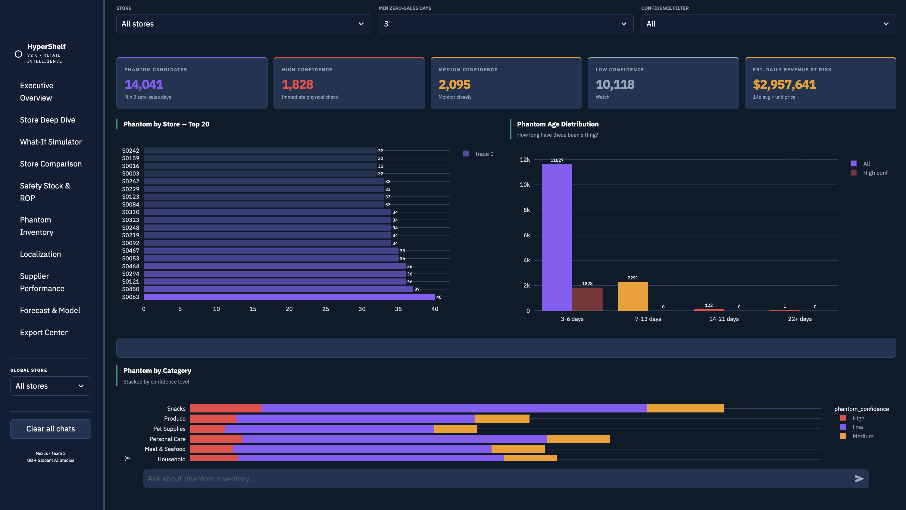
Phantom detection is a binary classification problem with highly non-linear decision boundaries. A product that sold 50 units last week and zero this week is probably not a phantom — maybe it's a slow week. But a product that shows 200 units available, matches 3 phantom detection rules, and has had zero sales for 14 consecutive days is almost certainly a ghost. Random Forest captures these compound patterns through feature interactions across many trees, naturally handling class imbalance and providing confidence scores through vote proportion rather than a hard threshold.
Probabilistic forecasts are only valuable if they drive decisions. LightGBM's μ and σ outputs feed directly into a stochastic replenishment policy that replaced the naive old system. The change is not cosmetic — it fundamentally alters how inventory buffers are calculated.
The legacy reorder policy was:
This assumes two things that are both wrong in retail: (1) demand is perfectly predictable — that σD = 0, that tomorrow will look exactly like the 30-day average. And (2) suppliers are perfectly reliable — that σLT = 0, that a supplier who promised 7 days will always deliver in exactly 7 days. The formula buffers for neither. When a supplier delivers 3 days late into a Black Friday week where demand is running 40% above forecast — which is exactly when it will happen — the policy has no protection. Stockout is mathematically guaranteed.
The result: 0 safety stock units in the old policy. P90 coverage of 32.7%. $85.6M in leakage.
The formula has two variance terms inside the square root. LT × σD² captures demand uncertainty during the lead time period. D² × σLT² captures lead time uncertainty — what happens when a supplier is late. Both terms matter. A highly reliable supplier serving volatile demand needs more safety stock than an unreliable supplier in a predictable category. The old formula captured neither. The new formula captures both, scaled by the tier's service level Z-score.
Rather than just a static reporting dashboard, HyperShelf v2.0 features ubiquitous Agentic AI. We built two distinct layers: a global Standalone AI Chat for network-wide questions, and localized AI Explainers embedded directly into all 10 dashboard pages (Forecast, Stockouts, What-If, etc.).
LLaMA 3.2 3B is a 3-billion parameter language model served locally via Ollama with sub-2 second response time and zero API dependencies. It wasn't chosen for its ability to remember retail data — it was chosen for its ability to explain patterns that Python computes.
Python is better at: exact arithmetic, sorting, filtering, reading files, computing means and percentages. LLaMA is better at: explaining why Health & Wellness is harder to forecast than Meat & Seafood in conversational language, connecting "Bias -1.82" to "Post-Christmas demand collapse," adding retail domain context that would require 50 lines of hardcoded explanations if done in Python.
The hybrid architecture captures both strengths. Python computes "Health & Wellness: WAPE 23.4%, 90,343 training rows, Bias -0.10." LLaMA receives those exact numbers and explains why seasonal health trends and promotional volatility make this category structurally harder to model.
"Python finds the exact number.
LLaMA explains what it means.
The user just gets the answer."
Each dashboard page runs its own Python AI module — 10 separate files, each with intent routing, data fetching, and Plotly chart generation inline in the chat response. Quick reply buttons pre-wire the most useful questions. No page says "I don't know" — every answer starts from real data.
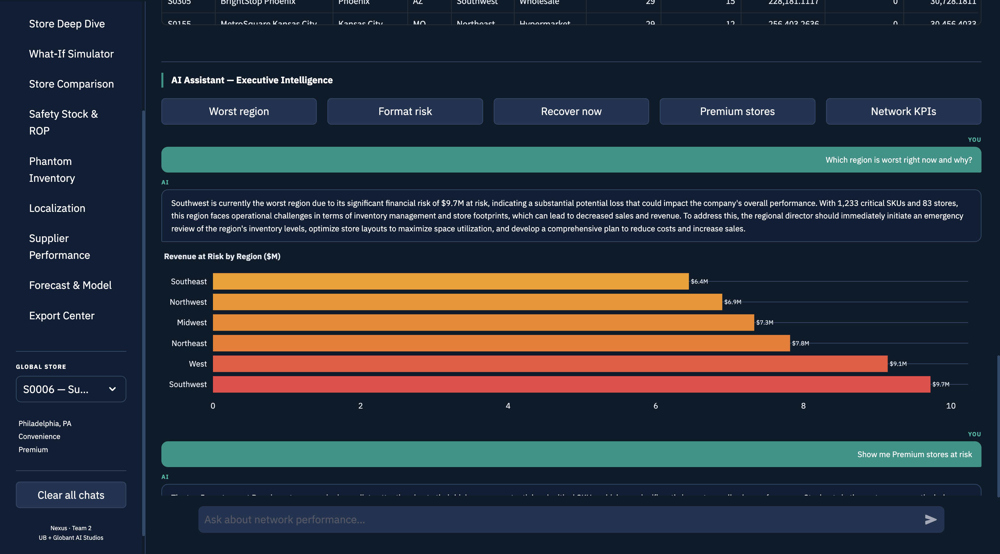
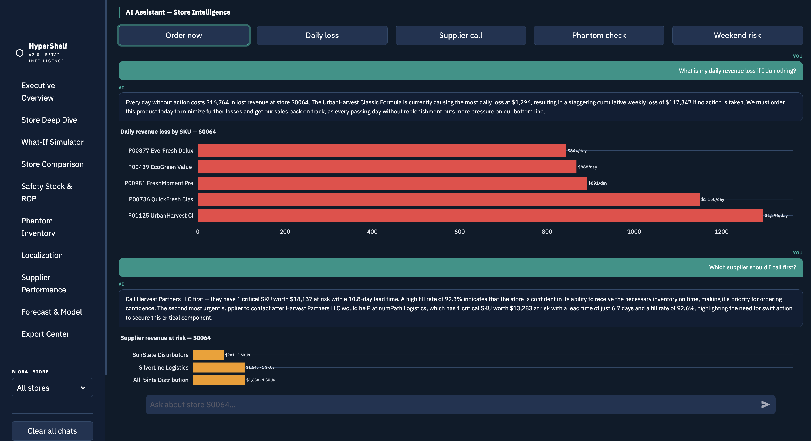
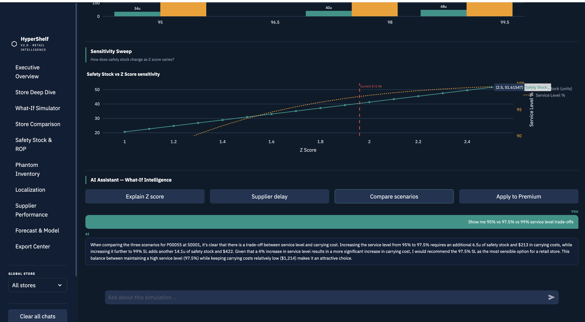
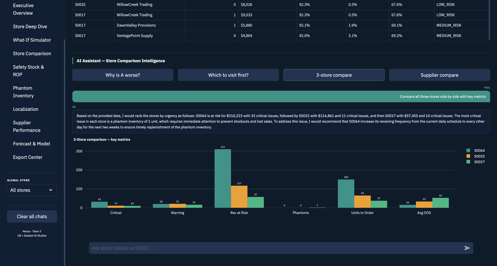
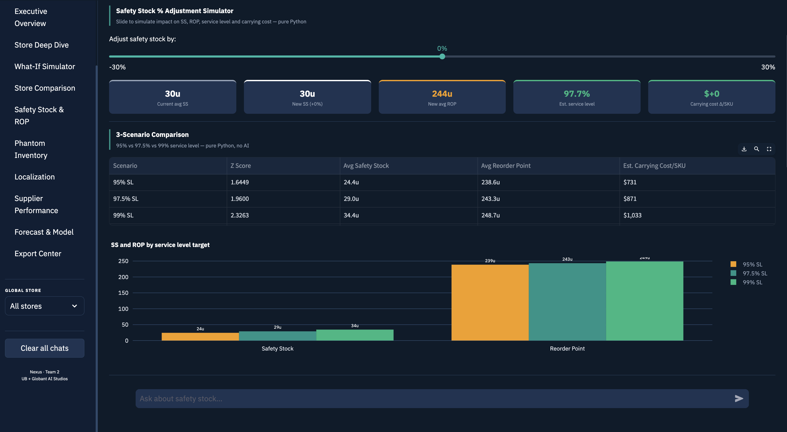
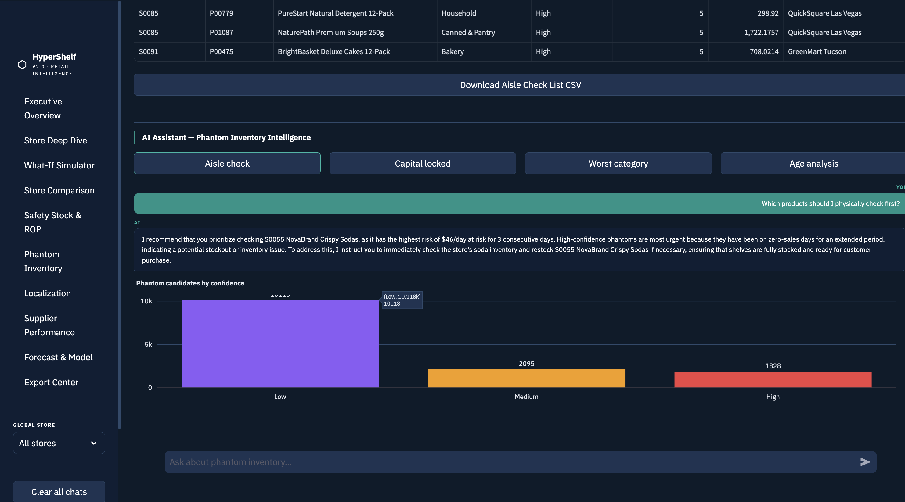
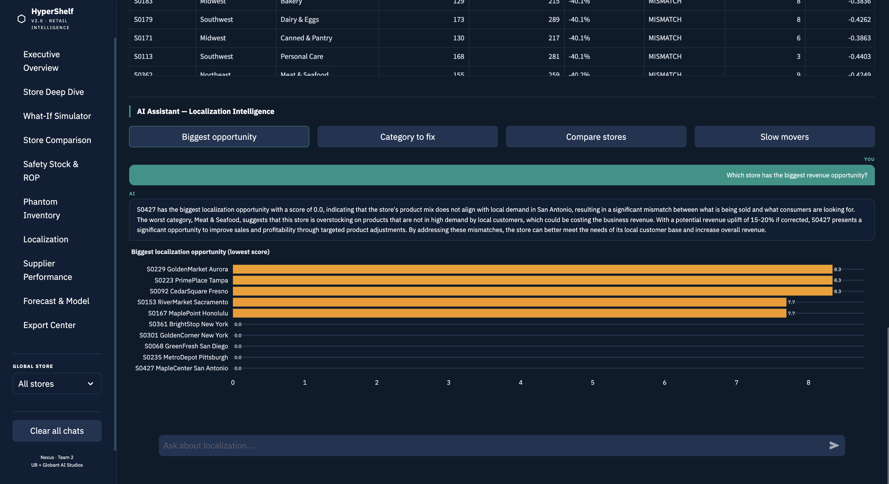
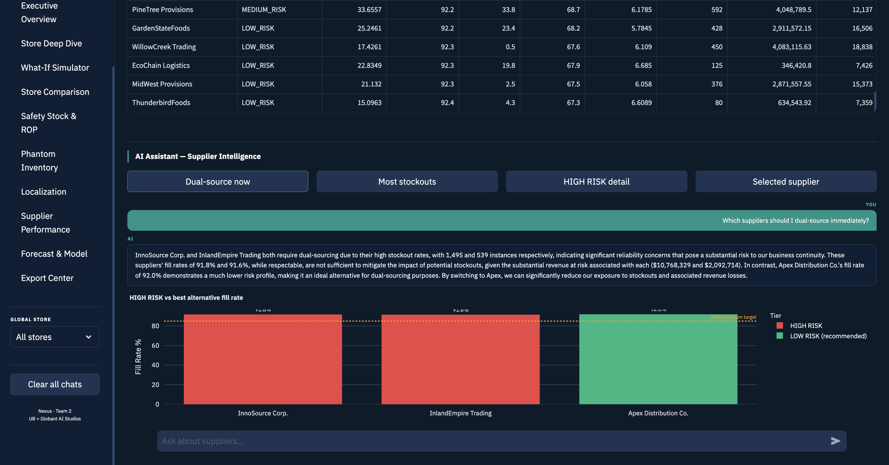
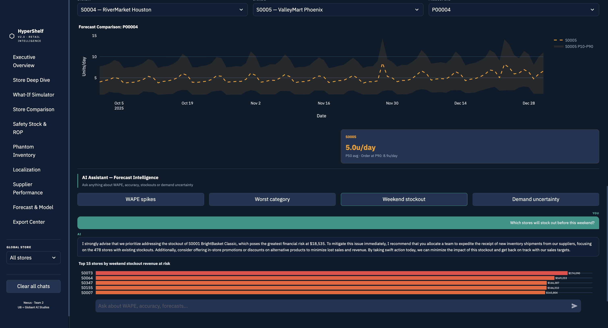
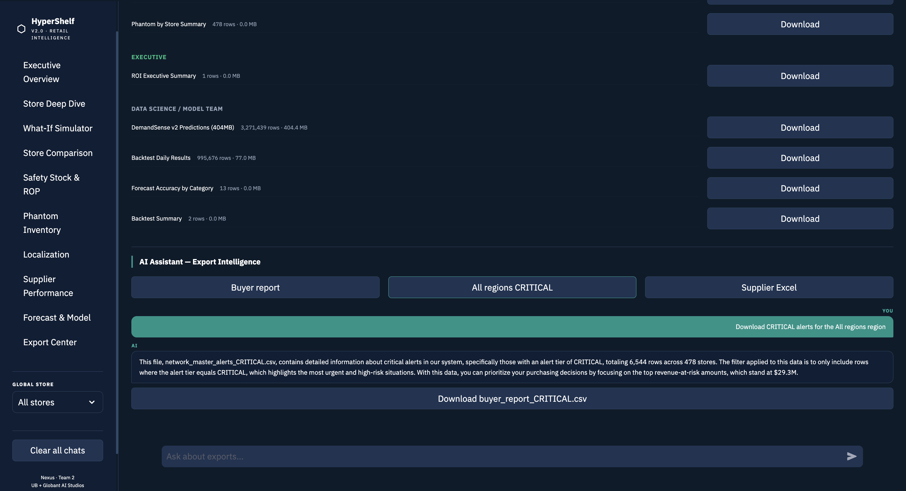
Production-grade AI systems gate every component, not just the headline model. Each part of the pipeline has its own evaluation criteria because each part fails in different ways: the forecasting model drifts, the phantom classifier silently drops recall, and the LLM starts routing to the wrong handler.
LightGBM demand forecasting, Random Forest phantom detection, LLaMA 3.2 language interface, and a 10-page Streamlit dashboard — all running on a single machine with no cloud dependencies.
Request a demo session to walk through all 10 pages and both AI interfaces. Or download the full project book for the complete methodology.